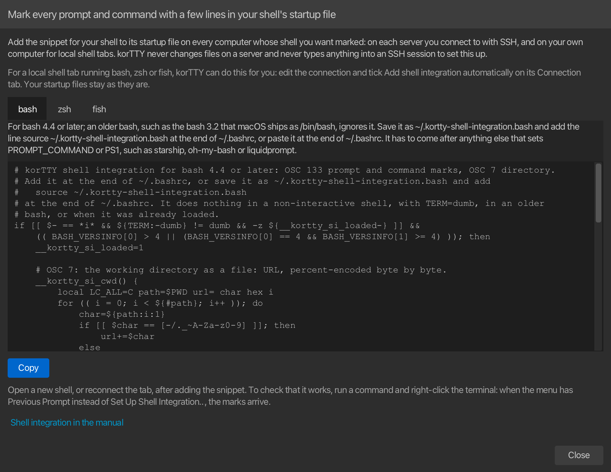

Shell integration¶
With shell integration, the shell tells korTTY where each prompt starts, where the command you type starts, where its output starts and how the command ended. It does so with invisible OSC 133 marks, the same ones iTerm2, WezTerm, kitty and VS Code read, which a few lines in the shell's startup file add. korTTY uses them to jump between the prompts of a long session with one key, to select or copy what the last command printed, to show in the command timestamp sidebar how each command ended and how long it ran, and to tell you when a long command finishes in a tab you are not looking at. In an SSH session they also tell korTTY that the shell is at its prompt, which the AI Agent's agent commands and the question before closing a busy tab rely on.
Without the marks nothing changes: the keys reach the shell as before, and the terminal looks and behaves as it always did.
Jumping between prompts¶
| Command | Keys | Where |
|---|---|---|
| Previous Prompt | Cmd+Shift+Up on macOS, Ctrl+Shift+Up on Windows and Linux | Edit menu and the terminal's right-click menu |
| Next Prompt | Cmd+Shift+Down on macOS, Ctrl+Shift+Down on Windows and Linux | Edit menu and the terminal's right-click menu |
A jump scrolls the pane so that the prompt shows at the top of the view, with the command and its output below it.
- At the bottom of the scrollback, Previous Prompt goes to the prompt of the command before the one you are typing, and each further press goes one command further back.
- After you scrolled by hand, a jump starts from the top line you see: Previous Prompt goes to the closest prompt above it and Next Prompt to the closest one below it, so a prompt you can already see is not skipped.
- A prompt on the last screen cannot move to the top, because the view cannot scroll past the bottom. The view then stays where it is, and the next press continues from that prompt.
- Next Prompt after the last prompt goes back to the bottom. Previous Prompt above the first prompt does nothing.
- The keys act in the pane that has the keyboard focus, and each pane of a split tab has its own marks. Edit → Previous Prompt and Edit → Next Prompt act in the focused pane of the selected tab, the right-click menu in the pane you right-clicked. When the Edit menu cannot jump, the status bar says why.
The keys are korTTY's only while the pane has prompt marks and shows its normal screen. In a pane without marks, and while a full-screen program such as vim, less, htop or tmux runs, they reach the program exactly as before: on Windows and Linux as ESC [ 1 ; 6 A and ESC [ 1 ; 6 B. With broadcast mode on, or with the pane taking part in multi-exec, a jump acts only in the pane you pressed the key in; when the key goes to the program instead, it goes to the other panes as well on Windows and Linux, like any other arrow key. Windows Terminal and GNOME Terminal scroll by one line with Ctrl+Shift+Up and Ctrl+Shift+Down; in korTTY that is Ctrl+Up and Ctrl+Down (Cmd+Up and Cmd+Down on macOS).
The right-click menu¶
A pane with prompt marks has Previous Prompt, Next Prompt, Select Last Output and Copy Last Output in its right-click menu, all greyed out while a full-screen program runs, and the last two also until a command finished. A pane whose shell sends no marks shows Set Up Shell Integration… instead, which opens the window with the snippets described under Setting it up. Neither shows while shell integration is switched off, or for a connection whose terminal emulation cannot carry the marks (Wyse, TeleVideo, HP, IBM 3270 and 5250, PETSCII).
Selecting and copying a command's output¶
| Command | Where |
|---|---|
| Select Last Output | Edit menu and the terminal's right-click menu |
| Copy Last Output | Edit menu and the terminal's right-click menu |
Select Last Output selects everything the last command printed, as if you had dragged over it with the mouse: Edit → Copy then copies it, and with Copy selection to clipboard automatically in Settings → Terminal it is copied at once. Copy Last Output puts the output on the clipboard straight away and leaves the selection you have as it is. Neither has a key of its own.
- The output runs from the line below the command line to where the next prompt starts; the prompt and the command line are not part of it. The copy has no line break at its end, and empty lines at its end are left out. Output without a line break at its end, such as that of
printf done, ends where the next prompt starts on the same line. - The last command is the newest one that finished. While a command such as
tail -fstill runs, both take the output of the command before it, and a prompt where you pressed Enter without a command does not count. - Edit → Select Last Output and Edit → Copy Last Output act in the focused pane of the selected tab, the right-click menu in the pane you right-clicked. The status bar says what was selected or copied, or why nothing was: no command has finished in the pane yet, the command printed nothing, a full-screen program runs in the pane, or the shell sends no marks.
- When the output is longer than the scrollback holds, its first lines are already gone: both then take what is left, from the oldest line in the scrollback, and the status bar says that the start is missing. Raise Scrollback in Settings → Terminal to keep longer outputs whole.
- Copies go through korTTY's clipboard, so the enterprise policy's internal clipboard mode keeps them inside korTTY.
Both need the marks for the start of the output and the end of the command (OSC 133 C and D), which korTTY's snippets send. A shell set up some other way that marks only its prompts gets prompt jumps, but the status bar then says that no command has finished.
Exit status and runtime¶
The command timestamp sidebar on the left of the terminal shows how each command the shell marked ended. The sidebar is off by default: turn it on with View → Show Command Timestamps (Cmd+Shift+T on macOS, Ctrl+Shift+T on Windows and Linux) or Show Command Timestamps in the terminal's right-click menu, or for every new terminal with Show command timestamps in Settings → Terminal. korTTY keeps the statuses while the sidebar is hidden, so turning it on shows them for the commands that already ran.
| Mark | Meaning |
|---|---|
| ✓ in green | The command finished with exit status 0 |
| ✗ in red | The command finished with any other exit status, for example 1 for an error or 130 after Ctrl+C |
| … | The command still runs; the mark stands on the first line of its output |
- A finished command's mark stands on the line where it finished, which is where the shell prints the next prompt. The time on that line is when the command finished, and above it, next to the date, the command's runtime replaces the time since the previous mark:
10/04 12s,10/04 1:05, or10/04 <1sfor a command that took less than a second. The runtime counts from the moment the command started to the moment it finished, without the time you spent typing it. - Pointing at the line shows the date and time, the Runtime and the Exit status; pointing at the … of a running command shows how long it has been running.
- Without shell integration, the sidebar takes a command to be finished after half a second without new output, which marks a command that pauses before it prints more as finished too early. For a command the shell marked, korTTY waits for the shell's mark instead. Commands the shell does not mark, such as those you type into a program or into a second ssh session started from the first, keep the half-second guess.
- Each mark has a shape of its own besides its colour, so you can tell them apart without telling green from red. A shell that reports no exit status shows the runtime without a mark.
- While shell integration is switched off, the sidebar shows no marks and the time since the previous mark again.
The sidebar has a fixed width: with a very large terminal font, a long runtime or the mark can be cut off at its right edge.
Notification when a long command finishes¶
When a command that ran at least 30 seconds finishes in a tab you are not looking at, korTTY marks the tab with 🔔 and shows a desktop notification with the tab's name, the exit status and the runtime, for example Command failed (exit 1) after 2 min 14 sec. It never shows the command itself. Settings → Terminal → Notifications switches the notification off or changes the 30 seconds; see Long-running commands for the details.
Setting it up¶
Add the snippet for your shell to its startup file on every computer whose shell you want marked: on each server you connect to with SSH, and on your own computer for local shell tabs. korTTY never changes files on a server and never types anything into an SSH session to set this up. Open a new shell, or reconnect the tab, after adding the snippet.
For a local shell tab that runs bash, zsh or fish, korTTY can also do it for you without a snippet in your startup files: see Adding it to local shells automatically.
Set Up Shell Integration… opens a window with the snippets: from the right-click menu of a terminal whose shell sends no marks, or with the button of the same name in Settings → Terminal → Shell integration, which works while the setting is off too. It has a tab for bash, zsh and fish, each with where the snippet goes and the snippet itself, the same text as below.

- Copy puts the snippet of the selected tab on the clipboard, ready to paste into the startup file in an editor on the server. Pasted at a shell prompt instead, it marks only that shell, until it exits. The copy goes through korTTY's clipboard, so with the enterprise policy's internal clipboard mode the snippet stays inside korTTY, and the window says so: paste it into a korTTY terminal or editor then. You can also select part of the text and copy that.
- The window opens on the shell you picked last, bash the first time. From the right-click menu of a local shell tab that runs bash, zsh or fish, it opens on that shell instead; korTTY cannot tell which shell a server runs, so for an SSH connection pick the shell yourself.
- The window does not block the rest of korTTY, so it can stay open while you paste the snippet into a terminal. There is only one: opening it again brings it to the front. Shell integration in the manual at its bottom opens this page.
- A line under its introduction points to Add shell integration automatically, with which korTTY adds the snippet to a local bash, zsh or fish by itself; see Adding it to local shells automatically.
Each snippet:
- runs only in an interactive shell whose
TERMis notdumb, soscp,rsyncand scripts that read the startup file are not affected; - loads only once, even when the startup file is read twice;
- keeps your prompt and the
PROMPT_COMMAND,precmdor event hooks you already have; - also reports the shell's working directory with OSC 7, which korTTY uses as the session's current directory, for example for relative file paths and Open in Snippet Editor.
To check that it works, run a few commands and press Cmd+Shift+Up (Ctrl+Shift+Up on Windows and Linux), or right-click the terminal: Previous Prompt instead of Set Up Shell Integration… means the marks arrive.
bash¶
For bash 4.4 or later; in an older bash, such as the bash 3.2 that macOS ships as /bin/bash, it does nothing. Save it on the server as ~/.kortty-shell-integration.bash and add source ~/.kortty-shell-integration.bash as the last line of ~/.bashrc, or paste it at the end of ~/.bashrc. It has to come after anything else that sets PROMPT_COMMAND or PS1, such as starship, oh-my-bash or liquidprompt.
# korTTY shell integration for bash 4.4 or later: OSC 133 prompt and command marks, OSC 7 directory.
# Add it at the end of ~/.bashrc, or save it as ~/.kortty-shell-integration.bash and add
# source ~/.kortty-shell-integration.bash
# at the end of ~/.bashrc. It does nothing in a non-interactive shell, with TERM=dumb, in an older
# bash, or when it was already loaded.
if [[ $- == *i* && ${TERM:-dumb} != dumb && -z ${__kortty_si_loaded-} ]] &&
(( BASH_VERSINFO[0] > 4 || (BASH_VERSINFO[0] == 4 && BASH_VERSINFO[1] >= 4) )); then
__kortty_si_loaded=1
# OSC 7: the working directory as a file: URL, percent-encoded byte by byte.
__kortty_si_cwd() {
local LC_ALL=C path=$PWD url= char hex i
for (( i = 0; i < ${#path}; i++ )); do
char=${path:i:1}
if [[ $char == [-/._~A-Za-z0-9] ]]; then
url+=$char
else
printf -v hex '%02X' "'$char"
url+=%${hex: -2}
fi
done
printf '\e]7;file://%s%s\a' "${HOSTNAME-}" "$url"
}
# Runs first in PROMPT_COMMAND, while $? still holds the command's exit status: D, then OSC 7.
# It returns that status again, so the PROMPT_COMMAND hooks after it still see it.
__kortty_si_precmd() {
local exit_code=$?
printf '\e]133;D;%s\a' "$exit_code"
__kortty_si_cwd
return "$exit_code"
}
# Runs last in PROMPT_COMMAND: A at the start of the prompt and B at its end, put back whenever
# a theme rewrote PS1. It leaves $? as it found it, for a prompt that shows it.
__kortty_si_prompt() {
local exit_code=$?
[[ $PS1 == *'\e]133;A\a'* ]] || PS1='\[\e]133;A\a\]'$PS1
[[ $PS1 == *'\e]133;B\a'* ]] || PS1=$PS1'\[\e]133;B\a\]'
return "$exit_code"
}
# C: bash prints PS0 after it read a command line, right before the command runs.
[[ ${PS0-} == *'\e]133;C\a'* ]] || PS0=${PS0-}'\e]133;C\a'
if [[ $(declare -p PROMPT_COMMAND 2>/dev/null) == 'declare -a'* ]]; then
PROMPT_COMMAND=(__kortty_si_precmd "${PROMPT_COMMAND[@]}" __kortty_si_prompt)
else
PROMPT_COMMAND=__kortty_si_precmd${PROMPT_COMMAND:+$'\n'$PROMPT_COMMAND}$'\n'__kortty_si_prompt
fi
fi
zsh¶
For zsh 5.1 or later. Save it as ~/.kortty-shell-integration.zsh and add source ~/.kortty-shell-integration.zsh as the last line of ~/.zshrc, or paste it at the end of ~/.zshrc, after oh-my-zsh, prezto or starship. With powerlevel10k, set POWERLEVEL9K_TERM_SHELL_INTEGRATION=true in ~/.p10k.zsh instead: powerlevel10k then sends the marks itself.
# korTTY shell integration for zsh 5.1 or later: OSC 133 prompt and command marks, OSC 7 directory.
# Add it at the end of ~/.zshrc, or save it as ~/.kortty-shell-integration.zsh and add
# source ~/.kortty-shell-integration.zsh
# at the end of ~/.zshrc. It does nothing in a non-interactive shell, with TERM=dumb, or when it
# was already loaded.
if [[ -o interactive && ${TERM:-dumb} != dumb && -z ${__kortty_si_loaded-} ]]; then
typeset -g __kortty_si_loaded=1
# OSC 7: the working directory as a file: URL, percent-encoded byte by byte.
__kortty_si_cwd() {
emulate -L zsh
setopt no_multibyte
local LC_ALL=C
local url= char
local -i i
for (( i = 1; i <= ${#PWD}; i++ )); do
char=${PWD[i]}
if [[ $char == [-/._~A-Za-z0-9] ]]; then
url+=$char
else
# The byte's value as two hex digits, from zsh's own arithmetic.
url+=%${(l:2::0:)$(( [##16] #char ))}
fi
done
printf '\e]7;file://%s%s\a' "${HOST-}" "$url"
}
# The first precmd hook, while $? still holds the command's exit status: D, then OSC 7.
__kortty_si_precmd() {
local exit_code=$?
printf '\e]133;D;%s\a' "$exit_code"
__kortty_si_cwd
}
# The last precmd hook: A at the start of the prompt and B at its end, put back whenever a theme
# rewrote PS1.
__kortty_si_prompt() {
[[ $PS1 == *$'\e]133;A\a'* ]] || PS1=$'%{\e]133;A\a%}'$PS1
[[ $PS1 == *$'\e]133;B\a'* ]] || PS1=$PS1$'%{\e]133;B\a%}'
}
# C: zsh runs the preexec hooks after it read a command line, right before the command runs.
__kortty_si_preexec() {
printf '\e]133;C\a'
}
typeset -ga precmd_functions preexec_functions
precmd_functions=(__kortty_si_precmd ${precmd_functions[@]} __kortty_si_prompt)
preexec_functions+=(__kortty_si_preexec)
fi
fish¶
For fish 3.1 or later. Save it as ~/.config/fish/conf.d/kortty.fish; fish reads that folder on its own.
# korTTY shell integration for fish 3.1 or later: OSC 133 prompt and command marks, OSC 7 directory.
# Save it as ~/.config/fish/conf.d/kortty.fish. It does nothing in a non-interactive shell, with
# TERM=dumb, or when it was already loaded.
if status is-interactive; and test "$TERM" != dumb; and not set -q __kortty_si_loaded
set -g __kortty_si_loaded 1
# Before every prompt: OSC 7 with the working directory as a file: URL, then A.
function __kortty_si_prompt_start --on-event fish_prompt
printf '\e]7;file://%s%s\a' $hostname (string escape --style=url -- $PWD)
printf '\e]133;A\a'
end
# C right before a command runs, D with its exit status right after it.
function __kortty_si_preexec --on-event fish_preexec
printf '\e]133;C\a'
end
function __kortty_si_postexec --on-event fish_postexec
printf '\e]133;D;%s\a' $status
end
# B at the end of the prompt.
if functions -q fish_prompt; and not functions -q __kortty_si_original_prompt
functions -c fish_prompt __kortty_si_original_prompt
function fish_prompt
__kortty_si_original_prompt
printf '\e]133;B\a'
end
end
end
Adding it to local shells automatically¶
For a local shell tab, korTTY can add shell integration itself, without a snippet in your startup files. Edit the connection and tick Add shell integration automatically under Shell integration on its Connection tab, below the start directory. It is off for every connection until you tick it, and it applies the next time the tab connects or reconnects, also to every pane you split off the tab.
korTTY then starts the shell with a startup file of its own, a wrapper, which first runs the startup files the shell would have read anyway and then the same snippet as above:
| Shell | How korTTY starts it | What the wrapper runs first |
|---|---|---|
| bash | with --rcfile naming the wrapper |
~/.bashrc; for a login bash (-l or --login, as the Git Bash and Cygwin choices start it), /etc/profile and the first of ~/.bash_profile, ~/.bash_login and ~/.profile |
| zsh | with ZDOTDIR naming the wrapper's folder |
your .zshenv, .zprofile and .zshrc from your own ZDOTDIR or your home folder, also when your .zshenv moves ZDOTDIR; afterwards ZDOTDIR is yours again, so zsh reads your .zlogin itself and shells you start later never see the wrapper |
| fish | with --init-command, which fish runs after its own configuration |
config.fish and conf.d, as always |
- Your startup files are never changed. The wrapper lives in
~/.kortty/shell-integration, readable only by you, in a folder of its own for each shell, which korTTY deletes when the tab closes or the shell ends; a folder a crash left behind is deleted once it is a day old, when korTTY, started again, first starts a shell this way. - A startup file that already has korTTY's snippet does no harm: the snippet loads only once.
- The snippet's own version limits still apply: the bash 3.2 that macOS ships as
/bin/bashstarts with the wrapper but gets no marks, so pick a newer bash, such as one from Homebrew, or zsh. - zsh reads its system-wide
/etc/zshenv(/etc/zsh/zshenvon some Linux distributions) before the wrapper. If that file setsZDOTDIRitself, zsh never reads the wrapper and starts as before; move theZDOTDIRline into~/.zshenv, or add the snippet to your.zshrcby hand. - It works for bash, zsh and fish started with no other options than
-i,-land--login. With any other option, such as-c,--norcor a script, with another shell, or with a shell started through another program such asenvortmux, the shell starts exactly as you set it up, and the line under the box says why. On Windows the shell has to be named with its full path, as the Git Bash and Cygwin choices name it; PowerShell, cmd.exe and WSL cannot get it. - bash ignores
--rcfilein a login shell, so a login bash is started as an interactive bash whose wrapper reads the login files: it then does not count as a login shell, and it does not read~/.bash_logoutwhen it exits. - When korTTY runs from its Flatpak package, the wrapper is written where the host can read it and handed to the shell that
flatpak-spawn --hoststarts. A connection without a shell command of its own starts your login shell on the host, and the host picks the wrapper for bash, zsh or fish. - It needs Use the command marks of shells set up for shell integration (OSC 133) in Settings → Terminal: while that is off, the shell starts as it is, and the line under the box says so.
- korTTY never does this for SSH or Mosh connections and never types anything into a remote session: on a server, the snippet goes into the startup file as described under Setting it up. A connection shared through Teamwork never gets it either, whatever the shared file says, and an export leaves the choice behind, so it is only ever switched on on the computer the shell runs on.
Limits¶
- tmux and screen do not pass the marks on, so a shell inside them has none. Run the shell outside tmux, or set up tmux's own prompt navigation.
- Mosh connections never carry them: mosh-server draws the screen itself and drops the marks.
- Local Windows shells: the snippets cover bash, zsh and fish, not
cmd.exeor PowerShell, and whether Windows passes the marks of a shell such as Git Bash or WSL on depends on the Windows version. - Resizing: when a width change rewraps long lines, a jump can land a few lines off for prompts above the rewrapped text, the output that Select Last Output and Copy Last Output take can be off by as many lines, and so can the exit-status marks in the timestamp sidebar, like its timestamps.
- Nested ssh: OSC 7 names a host, and the first host a session reports becomes that session's own host. When you ssh on from the first server to a second one that also has the snippet, the second server's reports no longer move the session's directory: korTTY keeps the first server's directory and treats the pane as running elsewhere, so dropped files are not copied and the remote files sidebar pauses, until the first server reports again or the tab reconnects. Two names that differ only after the first dot, such as
web01andweb01.example.com, count as the same host, so a second server with the same short name is not told apart. When the first server has not reported a directory yet before you go on, there is no own host to compare with: the second server's directory is then taken, but a typedsshstill marks the pane as running elsewhere. - Fake marks: any program can print OSC 133 marks. The worst a fake mark does is send a jump to the wrong line, make Select Last Output and Copy Last Output take other lines of the pane than the last command's output, show a wrong exit status, runtime or finishing time in the timestamp sidebar, or mark the tab and show a Command finished notification with a made-up exit status. The notification's text is korTTY's own, so a fake mark cannot put words of its own into it, and the runtime is measured by korTTY, so at most one such notification per tab every 10 seconds is possible.
The marks and the exit statuses exist only in korTTY's memory for as long as the pane is open: they are not saved with a project, a restored project's output has none, and they never leave your computer. The times commands finished are timestamps like any other, which a project saves with the sidebar's other timestamps.
Switching it off¶
Settings → Terminal → Shell integration has Use the command marks of shells set up for shell integration (OSC 133), on by default. Switched off, korTTY ignores the marks: the prompt keys reach the program, the right-click menu shows no shell-integration entries, the timestamp sidebar shows no exit statuses, no long command marks its tab or notifies, and korTTY tells that an SSH session is at its prompt from the prompt's text alone, for the AI Agent's agent commands and for the question before closing a busy tab. This one setting covers every use of the marks; Settings → AI no longer has an option of its own for them. The change applies to open tabs as soon as you save. The marks stay invisible either way, because the terminal never shows OSC 133 sequences. See Terminal settings.